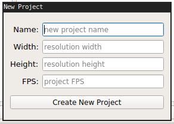
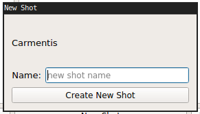

This is a quick guide on getting started using cc-pipe.
Before creating a project you must specify where the root of the projects will live. This can be anywhere, for example the top level of a drive share etc. Click settings at the bottom to open the settings file and specify the full path where it says repo.
The layout is split into projects on the left hand side and shots on the right. The structure is as follows:
Project>Shot>Software>Task
The buttons below the layout are self explanatory, note that you must make a Project before making a shot, shot before task etc. You can delete a project or shot using the 2 labelled buttons.
When creating a new project you will see the window below. This is the new project window and when you have filled in the information it will generate a new project for you.
Creating a new shot is simple, just choose the project you'd like to make one in, click New Shot and fill in the name.
To add a task, select the shot you'd like and then click New Task. The window will ask if you'd like to make a Houdini or Nuke structure andn choose whichever is suitable. If the software is something else you can simply choose other and it will create a folder for the software but no further structure.

To launch software you must go to the task folder first before launching. You don't have to, but if you don't it won't pick up the relevant environment variables that help make cc-pipe so useful.